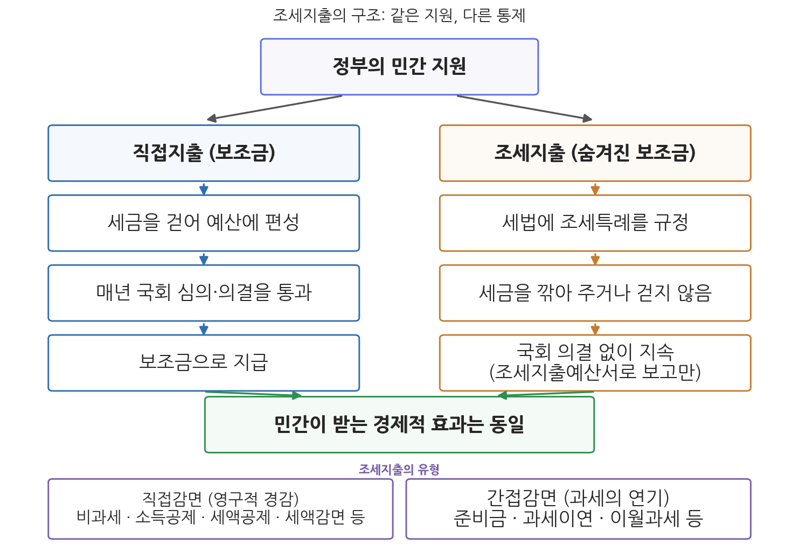
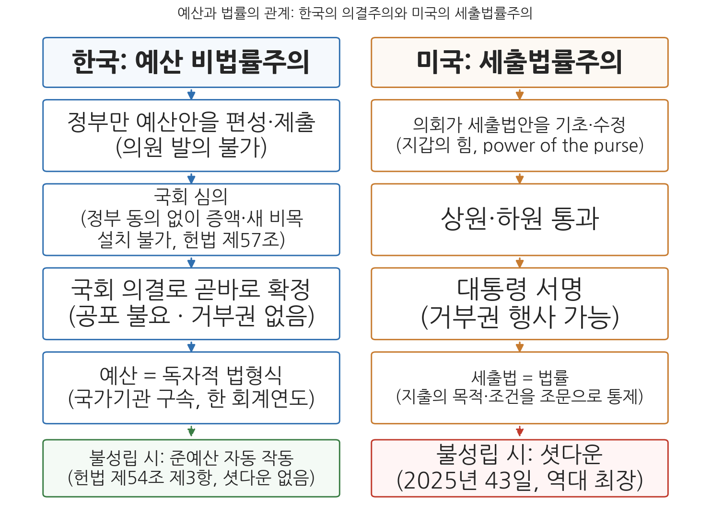

6주차 2차시. 조세지출·성인지 예산과 예산법률주의
최종 수정: 2026-08-13 · 이 교재는 학기 중에도 계속 업데이트됩니다
조세감면·비과세·소득공제·세액공제·우대세율적용 또는 과세이연 등 조세특례에 따른 재정지원 (조세특례제한법 제142조의2의 조세지출 정의)
이 장에서 배우는 것
2026년의 나라 살림을 이야기할 때 대부분의 사람은 총지출 727.9조 원이라는 숫자를 떠올린다. 그런데 예산서에 지출로 잡히지 않는 또 하나의 거대한 지원이 있다. 2026년 국세감면액은 80.5조 원으로 사상 처음 80조 원을 넘어 역대 최대를 기록할 전망이다(2025년 76.5조 원). 정부가 걷을 수 있었던 세금을 깎아 주거나 걷지 않는 방식으로 기업과 가계를 지원한 금액이다. 만약 이 돈을 일단 다 걷은 뒤 보조금으로 나눠 주었다면 매년 국회의 예산 심의를 받았을 것이다. 그러나 세금을 "깎아 주는" 방식을 취하는 순간 이 지원은 예산서 바깥으로 사라진다. 이렇게 숨어 있는 지출을 예산처럼 드러내 관리하자는 것이 이 장의 첫 주제인 조세지출예산제도다.
1차시에서 우리는 예산이 성립 시기에 따라 어떤 종류로 나뉘는지 보았다. 이번 차시는 예산의 종류라는 틀을 두 방향으로 확장한다. 하나는 방금 본 것처럼 예산서 바깥의 지원(조세지출)을 예산의 시야로 끌어들이는 제도이고, 다른 하나는 예산이 특정 가치에 미치는 영향을 분석해 예산서에 붙이는 제도, 곧 성인지 예산서와 온실가스감축인지 예산서다. 그리고 마지막으로 이 모든 논의의 바탕에 있는 근본 질문을 다룬다. 예산은 법인가. 한국의 예산은 법률이 아니라 국회의 의결로 확정되는 독자적인 형식인데, 이를 법률로 바꾸자는 예산법률주의 논쟁이 개헌 논의 때마다 되풀이되고 있다. 구체적으로 다음을 배운다.
- 조세지출의 개념과 유형, 그리고 "숨겨진 보조금"이라 불리는 이유
- 조세지출예산서의 구조와 2026년 국세감면 80.5조 원의 함의
- 성인지 예산제도와 온실가스감축인지 예산제도의 논리, 법적 근거, 운영 실제
- 예산의 법적 성격에 관한 학설(승인설, 법률설)과 한국의 예산 비법률주의
- 예산법률주의 도입 논쟁의 찬반 논거와 미국 세출법 제도와의 비교
이 장은 하나의 질문을 따라 전개된다. "예산서에 다 담기지 않는 재정활동을 어떻게 드러내고, 예산이라는 형식 자체를 어떻게 규율할 것인가?"
2.1 조세지출의 개념과 조세지출예산제도를 뜯어본다 → 2.2 성인지 예산제도와 온실가스감축인지 예산제도를 본다 → 2.3 예산의 법적 성격과 예산법률주의 논쟁을 다룬다 → 2.4 쟁점을 정리하고 3부 재정정책론(7주차)을 예고한다.
2.1 조세지출예산제도
조세지출: 세금을 깎아 주는 것도 지출이다
조세지출(tax expenditure)은 조세 감면, 비과세, 소득공제, 세액공제, 우대세율 적용, 과세이연 등 조세특례에 따른 재정지원을 말한다. 언뜻 모순된 조어다. 세금을 깎아 주는 일이 어떻게 "지출"인가. 핵심 논리는 등가성이다. 정부가 어떤 기업의 세금 100억 원을 감면해 주는 것과, 세금을 다 걷은 뒤 그 기업에 보조금 100억 원을 지급하는 것은 정부와 기업의 주머니 사정에 미치는 효과가 같다. 세제상의 특혜는 그만큼의 보조금을 준 것과 동일하다는 의미에서 조세지출을 숨겨진 보조금(hidden subsidies)이라 부르기도 한다. 이 개념을 정식화한 사람은 1960년대 미국 재무부의 서리(Stanley Surrey)로, 그는 세법 속에 흩어져 있는 특례 조항들이 사실상 지출 프로그램과 같은 기능을 하는데도 예산 통제를 받지 않는다는 점을 문제 삼았다.
조세지출의 목적은 직접지출의 목적과 다르지 않다. 첨단기술 투자처럼 특정 활동을 지원하거나, 소상공인·농어민처럼 특정 집단을 지원하거나, 기초공제·배우자공제처럼 일반 납세자의 부담을 덜어 주기 위한 것이다. 구체적인 조세지출의 내용은 조세특례제한법을 중심으로 소득세법, 법인세법 등 개별 세법에 규정되어 있다. 유형으로는 세금 부담을 영구히 덜어 주는 직접감면과 과세 시점을 뒤로 미루는 간접감면으로 나뉜다. 직접감면에는 비과세, 소득공제, 세액공제, 세액감면, 근로장려금·자녀장려금이나 부가가치세 영세율·면제 같은 기타감면이 있고, 간접감면에는 준비금, 과세이연, 이월과세 등이 있다.

그림 6-3을 읽는 법은 이렇다. 위쪽은 정부가 민간을 지원하는 두 경로를 나란히 놓은 것이다. 왼쪽 경로(직접지출)는 세금을 걷어 예산에 담아 보조금으로 지급하며 매년 국회 심의를 통과해야 한다. 오른쪽 경로(조세지출)는 걷을 세금을 애초에 깎아 주며, 세법에 한 번 규정되면 폐지될 때까지 자동으로 계속된다. 아래쪽은 조세지출의 유형 분류(직접감면과 간접감면)다. 이 그림에서 알 수 있는 것은 두 경로의 경제적 효과는 같은데 통제의 강도가 전혀 다르다는 점이다. 같은 100억 원의 지원이 왼쪽 길로 가면 해마다 심판대에 오르고, 오른쪽 길로 가면 예산서 바깥에서 조용히 계속된다. 조세지출예산제도는 바로 이 비대칭을 줄이려는 시도다.
조세지출예산서: 숨은 지출을 장부에 올리다
조세지출예산제도는 조세지출로 인한 세수 감소액을 종합·분류해 체계적으로 보여 주는 제도다. 보조금 형태의 직접지출이 매년 국회 심의를 거치듯 조세지출도 국회의 심의를 받아야 한다는 인식에서 탄생했다. 한국은 1999년부터 조세지출보고서를 작성해 국회에 제출해 왔고, 2011회계연도 예산안부터는 법정 문서인 조세지출예산서로 전환했다. 현재의 근거 조문은 조세특례제한법 제142조의2다.
"① ...장관은 조세감면·비과세·소득공제·세액공제·우대세율적용 또는 과세이연 등 조세특례에 따른 재정지원(이하 "조세지출"이라 한다)의 직전 연도 실적과 해당 연도 및 다음 연도의 추정금액을 기능별·세목별로 분석한 보고서(이하 "조세지출예산서"라 한다)를 작성하여야 한다."
무슨 뜻인가. 세 가지를 읽어낼 수 있다. 첫째, 조세지출의 법적 정의가 이 조문에 있다. 감면·비과세·공제·우대세율·과세이연이라는 다양한 세제상 특혜를 "재정지원"이라는 하나의 개념으로 묶은 것 자체가 조세지출 사고방식의 제도화다. 둘째, 분석의 시간 범위가 직전·해당·다음의 3개 연도다. 실적과 추정을 함께 담아 조세지출의 흐름을 보여 준다. 셋째, 이 서류의 작성은 세제를 관장하는 재정당국의 소관이다. 2026년 정부조직 개편 이후 세제 사무는 재정경제부(세제실)가 관장하므로 조세지출예산서의 작성 기반도 재정경제부에 있다. 예산안을 편성하는 기획예산처가 아니라는 점에 유의하자. 조세지출예산서는 국가재정법 제34조 제10호에 따라 예산안의 첨부서류로 국회에 제출된다. 다만 첨부서류일 뿐 국회의 심의·의결 대상은 아니다. 국회가 조세지출예산서의 숫자를 고쳐 확정하는 것이 아니라, 예산 심의와 세법 개정 심의의 참고자료로 활용하고 비과세·감면제도의 정비를 촉구하는 근거로 쓰는 것이다.
한국의 실제: 80조 원의 숨은 지출과 법정한도
조세지출의 규모는 꾸준히 늘어 왔다. 2026년 국세감면액은 80.5조 원으로 전망되어 사상 처음 80조 원을 넘었고, 국회예산정책처는 이보다 높은 81.5조 원으로 추정했다. 무한정 늘어나는 것을 막기 위해 국가재정법 제88조는 국세감면율(국세 수입총액과 국세감면액을 합한 금액에서 국세감면액이 차지하는 비율)이 대통령령으로 정하는 한도, 곧 직전 3개 연도 평균 국세감면율에 0.5%포인트를 더한 수준 이하가 되도록 노력할 의무를 규정한다. 2026년의 국세감면율은 16.1%로 법정한도 16.5%를 2022년 이후 4년 만에 준수할 전망이다. 뒤집어 말하면 2023-2025년에는 이 한도가 지켜지지 않았다는 뜻이기도 하다. 한도 규정이 "노력하여야 한다"는 노력 의무에 그치기 때문에 위반해도 제재가 없다.
직접지출은 매년 예산 심의에서 존폐를 다투지만, 조세지출은 세법에 규정되는 순간 일몰 조항이 없는 한 자동으로 계속된다. 수혜 집단은 분명한데(감면받는 기업·계층) 비용 부담자는 흩어져 있어(전체 납세자) 폐지에 저항하는 정치적 비대칭도 강하다. 일몰 기한이 붙은 조세특례조차 기한이 올 때마다 연장되는 일이 반복된다. 조세지출예산서가 "보여 주는" 데에서 그치고 국회 의결 대상이 아니라는 한계와 겹쳐, 조세지출은 재정 통제의 사각지대로 남기 쉽다. 4주차에서 본 총지출 개념이 조세지출을 포함하지 않는다는 점도 함께 기억해 두자. 나라 살림의 실질 규모는 총지출 숫자보다 크다.
2.2 성인지 예산제도와 온실가스감축인지 예산제도
성인지 예산: 예산의 종류가 아니라 예산을 보는 렌즈
성인지 예산제도는 예산이 성별에 미치는 효과를 예산과정에서 고려하여 재원이 남성과 여성에게 평등한 방식으로 쓰이도록 세입과 세출을 재구조화하려는 제도다. 흔한 오해부터 바로잡자. 성인지 예산은 여성을 위한 별도의 예산 항목이나 특별한 예산의 종류가 아니다. 전체 예산 가운데 대상사업을 골라 그 예산이 성별에 따라 다른 효과를 낳는지 분석하고, 그 결과를 재정운용에 반영하려는 것이다. 예컨대 취업 지원 사업의 수혜자가 성별로 어떻게 나뉘는지, 체육시설 예산이 사실상 한쪽 성별 위주로 쓰이고 있지 않은지를 따져 보는 식이다. 요컨대 성인지 예산은 예산의 종류가 아니라 예산을 보는 렌즈다.
"① 정부는 예산이 여성과 남성에게 미칠 영향을 미리 분석한 보고서[이하 "성인지(性認知)예산서"라 한다]를 작성하여야 한다.
② 성인지 예산서에는 성평등 기대효과, 성과목표, 성별 수혜분석 등을 포함하여야 한다.
③ 성인지 예산서의 작성에 관한 구체적인 사항은 대통령령으로 정한다."
무슨 뜻인가. 제1항의 주어가 "정부"라는 점, 그리고 "미리" 분석한다는 점이 핵심이다. 예산이 확정된 뒤 사후 평가하는 것이 아니라 예산안 편성 단계에서 성별 영향을 분석해 국회에 함께 내놓으라는 것이다. 성인지 예산서는 국가재정법 제34조 제9호에 따라 예산안의 첨부서류로 국회에 제출되고, 집행이 끝나면 성인지 결산서(제57조)가 결산보고서에 첨부되어 예산-결산의 고리가 완성된다. 이 제도는 2006년 국가재정법 제정으로 도입되어 2010회계연도 예산안부터 처음 적용되었고, 지방자치단체도 지방재정법에 따라 2013회계연도부터 성인지 예산서를 작성한다. 다만 공공기관은 작성 대상에 포함되지 않는다.
운영 방식을 보면, 성인지 예산서는 모든 사업이 아니라 선정된 대상사업에 대해서만 작성한다. 현행 국가재정법 시행령 기준으로 작성기준과 방식은 기획예산처장관이 성평등가족부장관과 협의하여 제시하고, 각 중앙관서의 장이 이에 따라 자기 소관 사업의 성인지 예산서를 작성한다. 2026년 정부조직 개편 전에는 기획재정부와 여성가족부가 하던 협의를 두 후신 부처가 이어받은 것이다.
온실가스감축인지 예산: 같은 문법의 확장
성인지 예산의 문법은 다른 가치로 확장될 수 있다. 예산이 성별에 미치는 영향을 분석할 수 있다면, 온실가스 배출에 미치는 영향도 분석할 수 있지 않은가. 이 발상이 2021년 6월 국가재정법 개정으로 제도화된 온실가스감축인지 예·결산제도다.
"① 정부는 예산이 온실가스 감축에 미칠 영향을 미리 분석한 보고서(이하 "온실가스감축인지 예산서"라 한다)를 작성하여야 한다."
무슨 뜻인가. 조문 구조가 제26조와 판박이라는 점이 곧 메시지다. "정부는 예산이 OO에 미칠 영향을 미리 분석한 보고서를 작성하여야 한다"는 같은 틀에 성평등 대신 온실가스 감축을 넣은 것으로, 인지예산(gender/climate budgeting)이라는 하나의 제도 계보임을 보여 준다. 온실가스감축인지 예산서는 국가재정법 제34조 제9호의2에 따라 예산안 첨부서류로 제출되며, 2023년도 예산안부터 처음 적용되었다. 첫해인 2023년도 예산안의 온실가스감축인지 예산서는 13개 부처 288개 사업, 약 11.9조 원 규모였다. 작성기준과 방식은 현행 시행령 기준으로 기획예산처장관이 기후에너지환경부장관과 협의하여 제시하고 각 중앙관서의 장이 작성한다.
성평등이나 온실가스 감축이 목표라면 그냥 관련 예산을 늘리면 되지 않을까. 인지예산의 논리는 다르다. 문제는 표적 예산의 크기가 아니라 전체 예산의 방향이라는 것이다. 여성 지원 사업 1조 원을 편성해도 나머지 수백조 원이 성별 격차를 키우는 방향으로 쓰이면 효과는 상쇄된다. 온실가스도 마찬가지다. 감축 사업 몇 조 원보다 도로·산업 지원 등 배출을 늘리는 예산의 규모가 훨씬 클 수 있다. 그래서 인지예산은 별도 주머니를 만드는 대신 모든(또는 선정된) 사업에 분석의 렌즈를 끼우는 전략을 택한다. 다만 이 전략의 약점도 같은 자리에 있다. 분석 서류가 편성 결정을 실제로 바꾸지 못하면 제도는 서류 작업으로 형식화된다. 성인지 예산서가 15년 넘게 쌓였지만 예산 배분을 실질적으로 바꿨는지에 대한 평가가 엇갈리는 이유이며, 온실가스감축인지 예산서도 같은 시험대 위에 있다.
2.3 예산법률주의 논쟁
예산은 법인가: 승인설과 법률설
이제 이 장의, 그리고 재정의 구조를 다룬 2부 전체의 바탕에 있는 질문으로 간다. 국회가 의결한 예산은 법적으로 무엇인가. 학설은 크게 둘로 갈린다. 승인설(예산행정설)은 예산을 법규범이 아니라 행정부의 재정 계획에 대한 국회의 승인 행위로 본다. 예산은 정부를 향한 것이지 국민의 권리·의무를 규율하지 않으므로 법률과 본질이 다르다는 것이다. 법률설은 예산도 국회가 의결하는 이상 법률과 같은 규범으로 보아야 한다고 본다. 한국의 통설은 그 중간에서, 예산을 법률은 아니지만 국가기관을 구속하는 독자적인 법형식으로 파악한다(예산법형식설). 예산은 정부에 지출의 권한과 한도를 부여하는 규범이되, 법률과는 성립 절차도 효력 범위도 다른 별개의 형식이라는 것이다.
예산법률주의는 국회가 예산을 단순한 의결 사항이 아니라 법률의 형식으로 확정하여, 예산이 법률과 동일한 효력을 가지도록 하는 제도를 말한다. 예산의 법적 성격에 관한 학설로는 예산을 행정부의 재정 계획에 대한 국회의 승인 행위로 보는 승인설(예산행정설), 예산을 법률과 같은 규범으로 보는 법률설, 그리고 예산을 법률은 아니지만 국가기관을 구속하는 독자적인 법형식의 규범으로 보는 법형식설이 있다. 한국의 통설은 법형식설이다.
이 학설 대립이 관념의 유희가 아닌 이유는, 나라마다 실제 제도가 갈리기 때문이다. 미국·영국·독일·프랑스는 예산을 법률의 형식으로 확정한다(예산법률주의). 한국과 일본은 예산을 법률과 구별되는 의결의 형식으로 확정한다(예산 비법률주의). 헌법 제54조 제1항이 "국회는 국가의 예산안을 심의·확정한다"고 하여 법률 제정 절차(제53조)와 별도의 트랙을 두고 있는 것이 한국 비법률주의의 헌법적 근거다.

그림 6-4를 읽는 법은 이렇다. 왼쪽 열이 한국의 예산 성립 경로, 오른쪽 열이 미국의 세출법 성립 경로이며, 각 단계를 마주 보게 배치했다. 한국의 예산은 정부만 편성·제출할 수 있고, 국회는 정부 동의 없이 증액하거나 새 비목을 설치할 수 없으며(헌법 제57조), 국회 의결로 곧바로 확정되어 대통령의 서명·공포도 거부권도 없다. 미국의 세출법은 의회가 스스로 기초하고 자유롭게 수정하는 법률안이며, 대통령의 서명이 있어야 성립하고 거부권의 대상이 된다. 이 그림에서 알 수 있는 것은 두 가지다. 첫째, 예산의 법적 형식은 행정부와 입법부 사이의 재정 권력 배분과 직결된다. 한국의 형식은 편성권을 행정부에 몰아주는 행정부 우위형이고, 미국의 형식은 "지갑의 힘(power of the purse)"을 의회에 주는 의회 우위형이다. 둘째, 1차시에서 본 셧다운과 준예산의 차이는 바로 이 형식 차이의 산물이다. 예산이 법률인 나라는 법률이 성립하지 못하면 지출 근거가 사라진다.
한국 비법률주의의 실제: 무엇이 문제로 지적되는가
현행 제도에서 예산은 법률이 아니므로 법적 강제력의 구조가 비대칭적이다. 세입 쪽은 조세법률주의(헌법 제59조)에 따라 법률로 엄격히 규율된다. 세금은 법률 없이 한 푼도 걷을 수 없다. 그러나 세출 쪽의 예산은 정부에 지출을 수권하는 준칙의 성격이어서, 정부는 이용·전용 같은 수단으로 일정 부분을 재량으로 변경할 수 있고 위반에 대한 직접적인 법적 제재도 약하다. 예산의 형식도 문제로 지적된다. 예산서는 과목과 금액의 나열에 머물러(5주차에서 본 과목체계를 떠올려 보자) 국회가 지출의 목적·조건·방식을 조문으로 통제하기 어렵고, 국회가 예산 의결에 붙이는 부대의견도 법적 구속력이 없다. 나아가 법률과 예산이 어긋나는 경우, 곧 법률은 있는데 예산이 없거나 예산은 있는데 근거 법률이 정비되지 않는 불일치가 생기면 정부는 추경·예비비·전용으로 대응하는데, 이는 1차시에서 본 것처럼 국회 의결의 효력을 사후적으로 흔드는 면이 있다.
도입론과 신중론
예산법률주의 도입론의 논거는 국회 재정통제권의 실질화로 모인다. 예산을 법률로 확정하면 예산과 세입·세출 관련 법률의 규범적 위상이 통일되어 법률-예산 불일치가 구조적으로 줄어들고, 국회 심의가 금액의 증감 흥정을 넘어 지출의 목적·내용·조건을 조문으로 검토하는 과정으로 바뀔 수 있다. 집행 조건이 법문에 명시되면 위반에 대한 법적 통제가 가능해져 예산의 규범력이 정상화되고, 재정민주주의의 원칙에도 더 충실해진다는 것이다. 2018년 3월 발의된 대통령 개헌안에 예산법률주의 도입이 포함되는 등 개헌 논의 때마다 단골 의제가 되어 왔으나, 이 개헌안 자체가 국회에서 처리되지 못하면서 제도 변화로 이어지지는 않았다.
신중론의 논거는 세 겹이다. 첫째, 경직성이다. 예산이 법률이 되면 변경에도 입법 절차가 필요해져 경제 상황의 급변이나 긴급 사태에 신속히 대응하기 어려워진다. 1차시에서 본 미국의 셧다운은 이 경직성의 극단적 비용이다. 둘째, 전환 비용이다. 수백조 원 규모의 예산을 조문화하는 데에는 편성과 심의 모두에서 막대한 시간과 노력이 들고 제도 정착에도 시일이 걸린다. 셋째, 근본적으로 형식이 아니라 역량의 문제라는 지적이다. 현행 제도에서도 국회 의결 없는 예산 집행은 불가능하므로 구속력의 골격은 이미 존재하며, 진짜 문제는 국회의 심의 전문성과 의지가 낮다는 데 있다는 것이다. 예산법률주의를 형식적으로 도입한다고 통제가 자동으로 강화되는 것은 아니고, 재정민주주의의 실질은 국회의 역량에 달려 있다는 이 지적은 11주차에서 국회의 예산심의 행태를 다룰 때 실증적으로 검토할 것이다.
미국 연방예산은 사업의 근거를 정하는 수권법(authorization act)과 실제 지출을 허용하는 세출법(appropriations act)의 이원 구조로 운영되며, 매 회계연도(10월 1일 개시)마다 분야별 정기 세출법안들이 상·하원을 통과하고 대통령이 서명해야 법률로 성립한다. 어느 하나라도 제때 성립하지 못하면 의회는 잠정지출결의(continuing resolution)로 다리를 놓는데, 2025년에는 이 다리마저 놓이지 못했다. 2025년 10월 1일 시작된 셧다운은 43일간 이어져 역대 최장을 기록했고, 2025년 11월 12일 상원(68 대 32)과 하원(222 대 209)이 지출 법안을 통과시키고 대통령이 서명하면서 끝났다. 예산이 법률이기에 의회 통과와 대통령 서명이라는 두 관문 중 하나만 막혀도 정부의 지출 근거가 사라지는 구조다. (출처: 미국 의회 의결 기록과 언론 보도, 2025)
이 사례가 보여 주는 것은 예산법률주의가 국회(의회) 우위의 재정 통제를 실현하는 동시에 그 대가로 지불하는 비용이다. 세출법은 지출의 목적과 조건을 조문으로 통제하는 강력한 수단이지만, 정치적 교착이 곧 재정의 마비로 직결된다. 예산법률주의 논쟁을 평가할 때는 이 양면을 함께 놓아야 한다. 도입론이 그리는 것은 미국식 통제력이고, 신중론이 경계하는 것은 미국식 마비다.
2.4 쟁점과 함의: 2부를 닫으며
이 장의 세 주제는 겉보기에 잡다하지만 하나의 실로 꿰어진다. 예산이라는 형식의 경계 문제다. 조세지출은 예산서 바깥에 있는 실질적 지출이고, 성인지·온실가스감축인지 예산서는 예산서에 붙지만 의결 대상은 아닌 분석 문서이며, 예산법률주의 논쟁은 예산이라는 형식 자체를 법률로 바꾸자는 논의다. 셋 모두 "국회가 재정을 어디까지, 어떤 형식으로 통제할 것인가"라는 재정민주주의의 질문으로 수렴한다. 그리고 셋 모두에서 우리는 같은 교훈을 확인했다. 서류와 형식을 만드는 것과 통제가 실질화되는 것은 별개이며, 제도의 성패는 결국 그것을 운용하는 기관의 역량과 유인에 달려 있다.
이것으로 재정의 기초(1부)와 재정의 구조(2부)가 마무리되었다. 우리는 재정이 무엇인지(1-2주차), 재정이 회계·기금·통합재정·과목체계·예산의 종류라는 어떤 구조물로 짜여 있는지(3-6주차)를 보았다. 7주차부터는 3부 재정정책론이다. 이제까지 배운 구조물 위에서 정부가 재정을 정책 수단으로 어떻게 쓰는지, 곧 경기가 가라앉을 때 재정을 풀고 과열될 때 죄는 재정정책의 논리와 실제를 다룬다. 1차시에서 본 추경들이 바로 확장적 재정정책의 수단이었다는 점에서, 6주차와 7주차는 제도에서 정책으로 넘어가는 다리로 이어져 있다.
요약
조세지출은 조세감면·비과세·소득공제·세액공제·우대세율적용·과세이연 등 조세특례에 따른 재정지원으로, 보조금 지급과 경제적 효과가 같으면서도 예산 심의를 받지 않는다는 점에서 숨겨진 보조금이라 불린다. 조세지출예산서는 직전·해당·다음 3개 연도의 조세지출을 기능별·세목별로 분석한 문서로 1999년의 조세지출보고서에서 출발해 2011회계연도부터 법정화되었으며, 예산안 첨부서류로 제출되지만 국회의 심의·의결 대상은 아니다. 소관은 세제를 관장하는 재정경제부다. 2026년 국세감면액은 80.5조 원으로 역대 최대이며, 국세감면율 16.1%는 법정한도 16.5%를 4년 만에 준수할 전망이다. 성인지 예산제도는 예산이 성별에 미치는 영향을 편성 단계에서 분석하는 제도로 별도의 예산이 아니라 예산을 보는 렌즈이며, 2006년 국가재정법 제정으로 도입되어 2010회계연도부터 적용되었다. 온실가스감축인지 예산제도는 같은 문법을 온실가스 감축으로 확장한 것으로 2021년 국가재정법 개정으로 도입되어 2023년도 예산안부터 적용되었다. 두 예산서 모두 예산안 첨부서류이며, 작성기준은 기획예산처장관이 각각 성평등가족부장관·기후에너지환경부장관과 협의해 제시한다. 예산의 법적 성격에 관해서는 승인설과 법률설이 대립하며 한국의 통설은 예산을 독자적 법형식으로 본다. 한국은 예산을 법률이 아닌 국회 의결로 확정하는 비법률주의 국가로, 세입은 조세법률주의로 엄격히 규율되는 반면 세출 예산의 규범력은 상대적으로 약하다. 예산법률주의 도입론은 국회 재정통제권의 실질화를, 신중론은 경직성·전환 비용과 함께 문제의 본질이 형식이 아니라 국회의 심의 역량에 있다는 점을 논거로 삼으며, 2018년 대통령 개헌안에 포함되었으나 무산되었다. 미국의 세출법 체계는 의회 우위의 재정 통제를 실현하는 대신 2025년 43일 셧다운과 같은 마비의 비용을 치른다.
토론·복습 문제
6-5. (서술형 연습) 조세지출의 개념을 정의하고, 세금 감면이 보조금 지급과 경제적으로 등가라는 논리를 구체적인 예를 들어 설명한 뒤, 그럼에도 두 방식에 대한 국회 통제의 강도가 어떻게 다른지 서술하시오.
6-6. (계산·해석형) 어느 해의 국세 수입총액이 420조 원, 국세감면액이 80조 원이라고 하자. 국가재정법 제88조의 정의에 따라 이 해의 국세감면율을 계산하시오(소수점 첫째 자리까지). 직전 3개 연도의 평균 국세감면율이 15.8%였다면 이 해의 법정한도는 얼마이고, 이 해의 감면율은 한도를 준수했는가. 한도 위반에 제재가 없다는 점은 이 제도의 실효성에 어떤 함의를 갖는가.
6-7. (찬반 토론) "한국도 예산법률주의를 도입해야 한다"는 주장에 대해, 도입론(재정통제권 실질화, 법률-예산 불일치 해소)과 신중론(경직성, 전환 비용, 심의 역량 부족)의 논거를 각각 정리하고, 1차시에서 배운 미국 셧다운과 한국 준예산 제도의 비교를 논거에 반영하여 자신의 입장을 서술하시오.
6-8. 성인지 예산서와 온실가스감축인지 예산서는 예산안의 첨부서류일 뿐 국회의 의결 대상이 아니고, 조세지출예산서도 마찬가지다. 이 "보여 주되 묶지 않는" 설계의 장점과 한계를 각각 논하고, 세 문서 중 하나를 골라 실효성을 높일 수 있는 제도 개선 방안을 제안하시오.